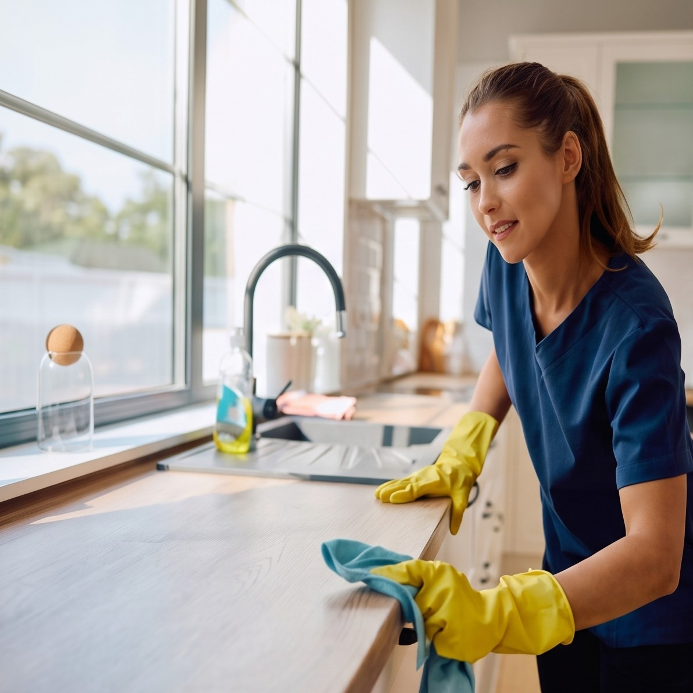
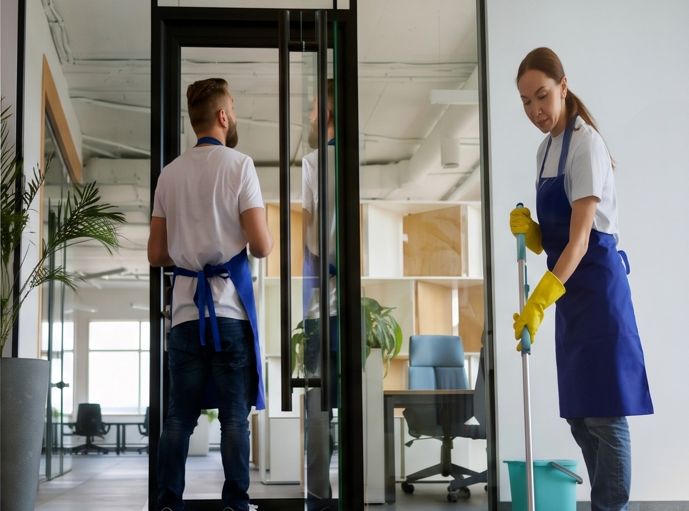
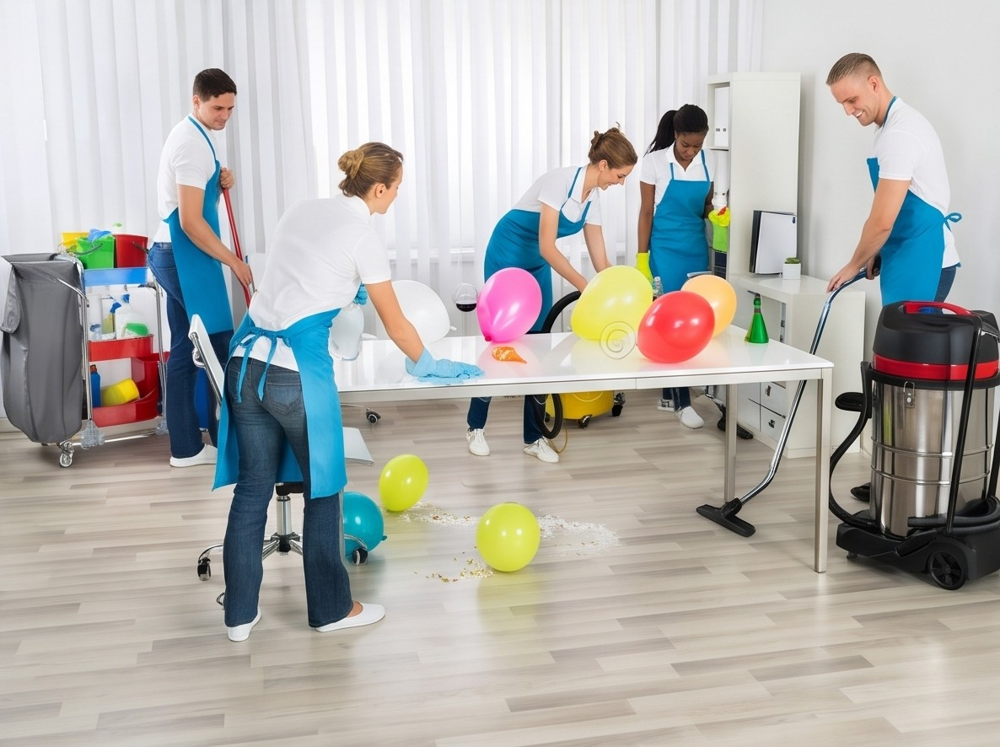

Limpieza de Casas y Residencias
No se trata solo de limpiar por encima, sino de realizar una higiene profunda en cada habitación. Nuestro equipo se encarga de revitalizar tus espacios con maquinaria especializada y productos de primera línea.
- Desinfección profunda de baños y cocinas.
- Limpieza detallada de ventanales y aberturas.
- Aspirado y tratamiento de alfombras y tapizados.


Mantenimiento Comercial y Oficinas
La imagen de tu empresa comienza desde la puerta de entrada. Brindamos servicios adaptados a los horarios de tu negocio para no interrumpir la jornada laboral, asegurando un entorno saludable para tus empleados y clientes.
- Mantenimiento diario, semanal o mensual programado.
- Provisión constante de insumos sanitarios.
- Gestión, separación y retiro de residuos.
Limpieza Post-Evento
Disfrutá de tu celebración sin preocuparte por el desorden posterior. Dejamos todo impecable y en condiciones óptimas después de reuniones, fiestas o eventos corporativos en tiempo récord.
- Recolección y clasificación de residuos.
- Lavado profundo de pisos y superficies manchadas.
- Restauración del espacio a su estado original.
